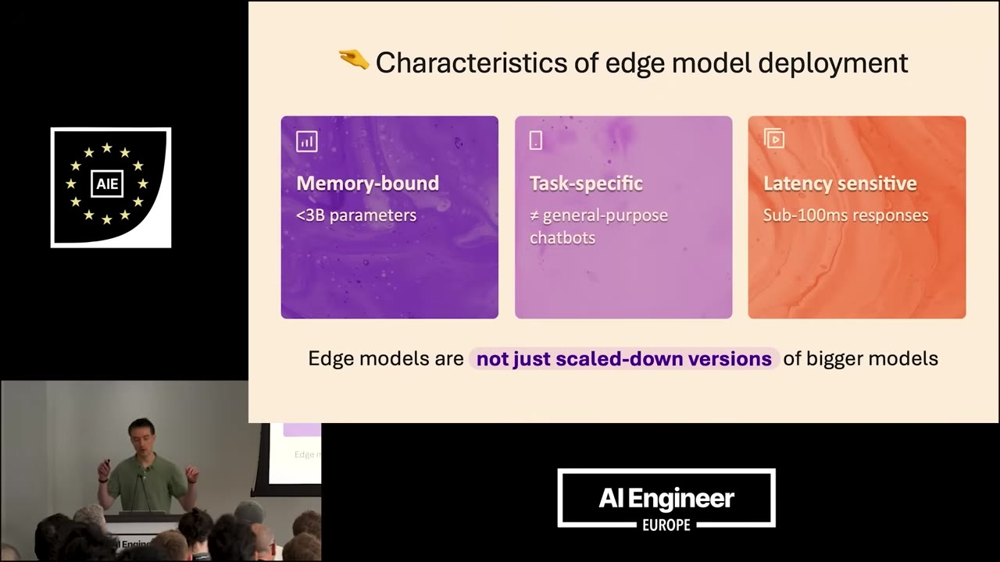
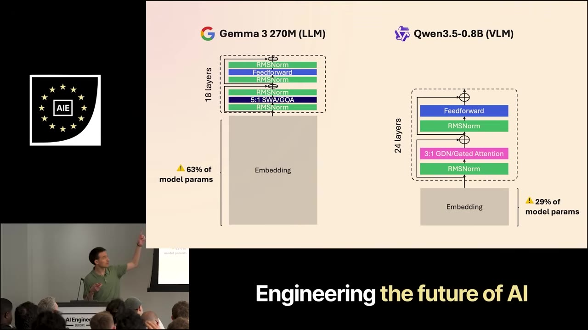
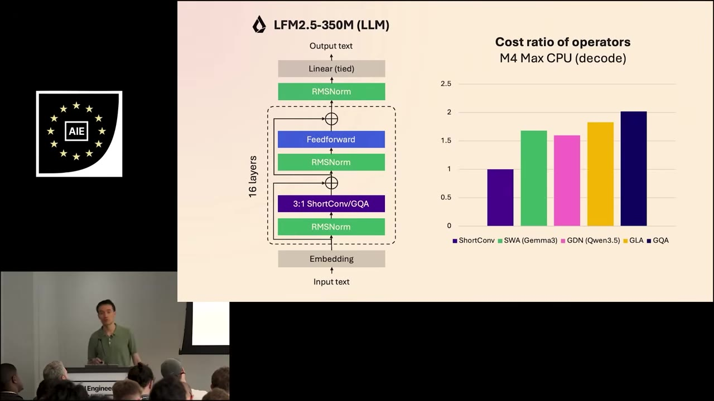
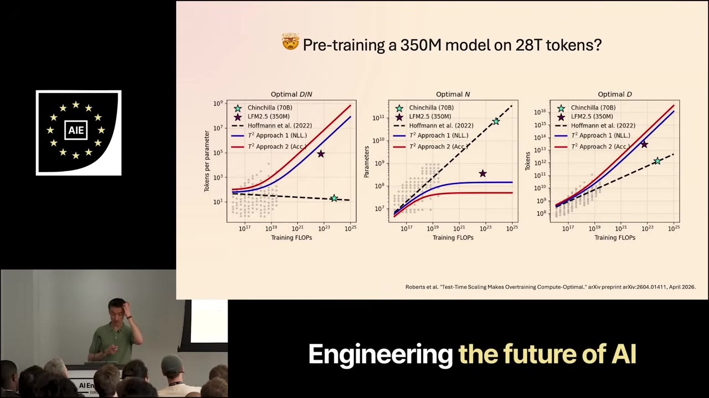
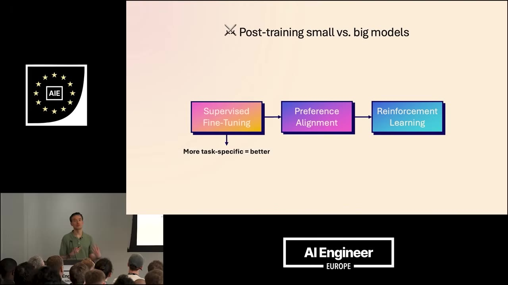
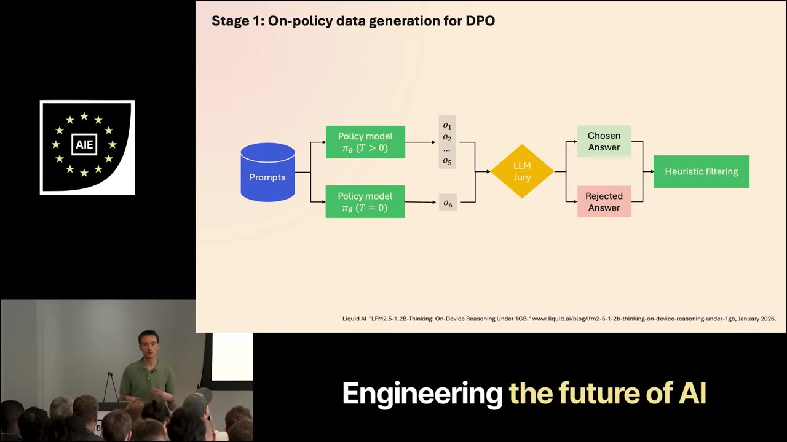
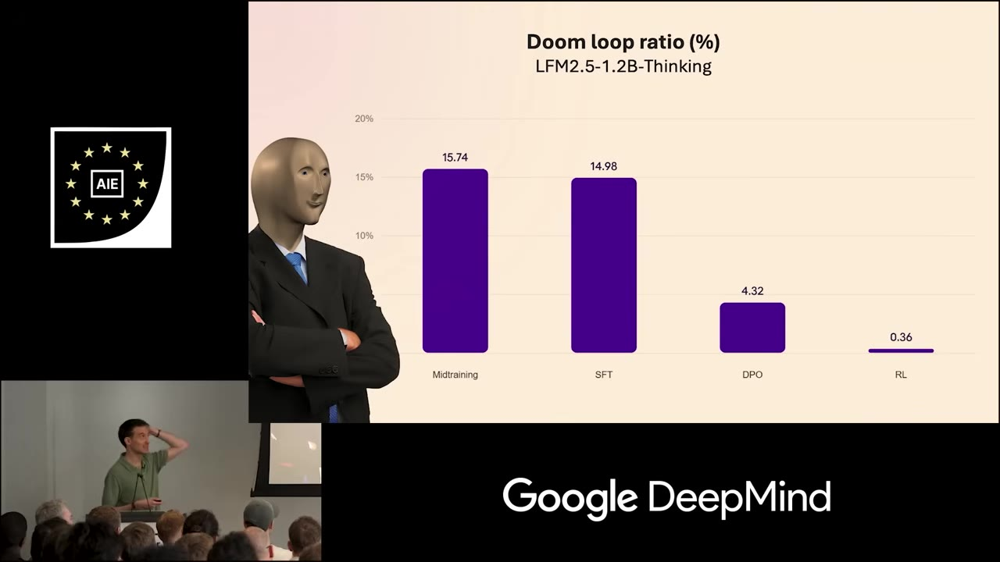
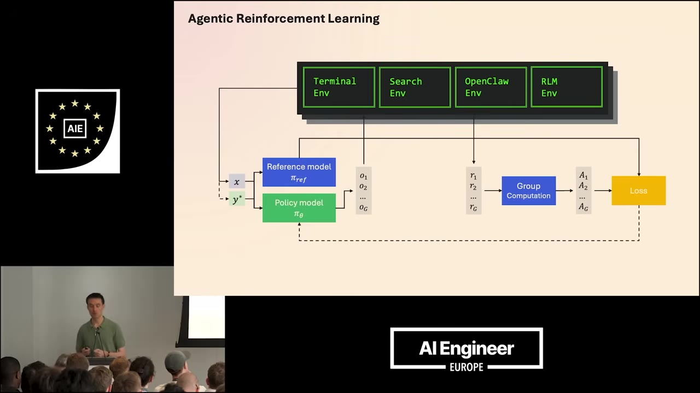

Maxim Labonne, head of pre-training at Liquid AI, on why edge models aren't just shrunk-down frontier models — and the architecture, scaling, and doom-loop fixes that come from treating them as their own thing.
Watch on YouTubeLabonne runs pre-training at Liquid AI, where the whole line — 350M up to 24B parameters — targets on-device deployment: phones, cars, anything where you can't reach for a datacenter. Three things separate these models from frontier ones. They're memory-bound (under 3B params, because the hardware is what it is), which gives them low knowledge capacity. They're task-specific — not general chatbots, but narrow tools that do one thing like summarization very well. And they're latency-sensitive, so throughput has to be fast.

Look at the smallest models in each family and most of the "parameter count" isn't doing the work you'd expect. In Gemma 3 270M the embedding layer is 63% of total parameters; even Qwen3.5-0.8B sits at 29%. The effective parameters — the ones actually used for reasoning and knowledge — are the rest, so the usable model is much smaller than the headline number. The reason these embeddings are so large is distillation: the student inherits a huge vocabulary from a teacher model.

LFM2's layer diagram looks broadly similar — a hybrid stack — but Liquid built it by on-device profiling rather than theory: implement candidate operators on the actual target chips and measure. That's how they landed on the gated short-convolution block. Short convs come out cheaper than the alternatives — sliding-window attention, gated delta net, gated linear attention, group query attention — and the cost ratio favors them, which is exactly what you want when latency is the constraint. In practice, profiling inference on CPU and on a Samsung Galaxy S25 Ultra shows LFM2 running faster and using less memory, with high GPU throughput even at high concurrency.

Instead of doing more theoretical work we decided to say, okay, let's try to really implement it on the target hardware.— Maxim Labonne
The LFM2.5 recipe has familiar stages — pre/mid-training, SFT, preference alignment, RL — but the token count is the surprise: Liquid pre-trained a 350M model on 28 trillion tokens. By Chinchilla that's wildly past compute-optimal, but performance keeps climbing with more tokens. A scaling-laws paper by Roberts et al. (test-time scaling) puts LFM2.5-350M against new curves and finds the model is actually under-trained — they should have used even more tokens. That's good news, since more pre-training keeps working at the smallest scale and these models are cheap to train. The payoff shows in targeted benchmarks: big jumps over the previous LFM2 350M on knowledge (GPQA Diamond), instruction following (IFBench), data extraction (case-report bench), and tool use (BFCL, τ²-bench).

The stages don't change between small and big models — the difference is how you run them. Supervised fine-tuning works better the narrower you go; if you have one specific function to call, that's an excellent use case, and the same logic lets you take a Hugging Face checkpoint and fine-tune it for your own task. Preference alignment (Liquid uses an on-policy, length-normalized DPO variant) brings general improvements — the model just sounds better afterward, not only on benchmarks. Reinforcement learning is remarkably efficient even at small scale; you want as many environments and tasks as possible so the model generalizes.

The new failure mode is doom looping — the model repeats a sequence of words forever and never stops. It shows up worst when three things stack: a small model, a reasoning model, and a task that's too complex. Liquid attacks it in two places. Solution one is during preference alignment: for each prompt, generate five rollouts with temperature sampling (diverse, at least one shouldn't loop) plus one greedy rollout at temperature zero (expected to loop), score them all with an LLM jury, and make the best the chosen answer and the worst the rejected one — so the loop gets trained out. Solution two is RL with verifiable rewards plus a small n-gram repetition penalty: a math answer with no extractable final answer earns no reward, and the penalty discourages repetition on top.


If you do the same thing with Qwen3.5-0.8B in reasoning mode, you will see over 50% doom loops — that also shows it's just a scaled-down version of bigger models.— Maxim Labonne
The last constraint — memory-bound means low knowledge capacity means hallucination — has a clean fix: give the model tools. A tiny model that can Google anything you throw at it beats a base model on knowledge questions. Labonne's read from experience is that small models are very good at agentic tasks, and that's how they should be used — they don't need a big model's knowledge, they need solid reasoning to use tools reliably. Weak long-context handling has its own workaround: a recursive LM environment where the model writes Python to take a shortcut. Liquid trains for this with agentic RL across environments — terminal, search, OpenClaw, and a recursive-LM environment.
